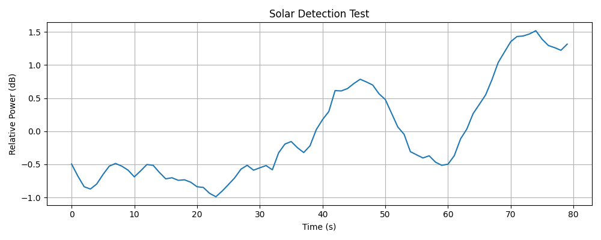

I can claim a certain level of knowledge and expertise in certain subfields of minor planet astronomy, and I believe I have contributed to professional minor planet science enough to back most of my words, but I can claim nothing of the sorts when it comes to radio astronomy. So, unlike the Minor Planet Astronomy page, this one will be mostly about my personal experience.
Amateur radio astronomy is... a few steps up. I always think of astronomy as the "most natural of natural sciences". Not only because getting into astronomy only requires the simple task of looking up and asking your first question related to the objects in the sky, but the universe at large is also the one thing which we can't really influence with the actions of our own civilization (not in foreseeable future anyway, and our own Solar System is too small to matter). But the radio realm is invisible to our own eyes and it takes quite a few steps to get to the realization that such things as "electromagnetic waves" even exist and visible light is but a small part of it in a wide spectrum, so the introduction of either the human civilization or an individual astronomer to radio astronomy requires some work and it may not be very intuitive early on.
Amateur radio astronomy is also cursed. That is, if you want your own instruments. Just like I mentioned in Minor Planet Astronomy page, you can of course just download data from public data archives of professional observatories and do professional contributions and discoveries. But, unlike in optical-spectrum astronomy, if you want to get your own telescope for radio observations, the process might not be pretty.
When you take the average "serious" amateur astronomer, they will probably be an astrophotographer with an equatorial-mount motorized reflecting telescope. They will show you their colorful nebulae, rings of Saturn, moons of Jupiter, little craters and surface features of the Moon, sunspots, comets and all those... which is fine. It is good, they are doing very important work - getting average folk interested in astronomy is an invaluable service and what better way is there to both have personal fun and share the amazing views of the universe with the community! BUT! Rarely will that amateur give too much thought about the intricacies of the instruments they are using. Sure, they might have built an educational telescope and they could tell you the principles of an optical telescope on paper the moment you ask, but how many of them really thought about how to surface-finish the lenses and mirrors, or how to design the mechanical mounts of a tube? How do you power the motors? What kind of electric motor do you get? How do you feed it the appropriate voltage?
It is very natural not to think of those with an optical telescope, someone knows how to make them at economical scales and with quality unmatched by the DIY community. Because optical telescope are shiny and popular. They can give instant gratification if so desired. You can just buy one, point it at the sky and it works. You don't even have to read the theory! What you can't really do is just buy a radio telescope the same way you would buy an optical telescope. Radio telescopes are usually professional instruments purpose-built for certain observatories and surveys. Moreover, a lot of them are very big! Gargantuan! And you can't just point one at the sky and see a "radio image" like you'd see an image through the eyepiece of a commercial optical backyard telescope. So nobody builds radio telescopes at economy scales for amateurs. Barely anybody even sells radio telescopes, or CAN sell them in the first place. And unless you are starting a large construction project with million dollar funds, the results you will get from an amateur telescope will be easily rendered irrelevant to professional work by large radio telescope facilities. Not to mention that if you are living near urban areas, the interference from many terrestrial radio sources will drown the radio sources from the sky. No wonder people don't make radio telescopes for purchase. With all those factors, if you wish to get your own amateur radio telescope, the adventure will make you a radio instrument engineer.

Five-hundred-meter Aperture Spherical radio Telescope (FAST) in China.
I said that radio telescopes are big. I wasn't kidding. The largest single-dish radio telescope as of early 2026 is the FAST located in China. Just like how the diameter of a mirror increases the light-collecting capability of an optical telescope, a large dish will increase the capability of a radio telescope. BUT! Not all radio telescopes are large, and not all of them have dishes... In fact, some of them are quite small! The smallest professional radio telescope I personally saw was car-sized, and the smallest I made myself is comparable to a size of a human arm. Most amateur radio astronomers I see on the internet use small satellite TV dishes for their telescopes. Some people with yard space to spare build decameter telescopes for Jupiter observations. Some people just get two short pieces of wire for detecting the Sun, which is probably the easiest radio telescope one could ever build. It is clear that radio telescopes come in all sizes. So, what sort of instrument you will go for is really down to constraints, preferences and goals.

HASLAM 408 MHz All Sky radio map.
In the optical region, you can see what objects are most visible in the sky because your eyes can already see them. Something that looks bright to your eye will look bright in the eyepiece and on the camera. You can't do that with radio waves, can't see'em, no use.
There are a few prominent radio sources in the sky, but distinctions that usually don't occur as often in the optical region must be made. Radio spectrum is very large, and some objects may be bright only in certain radio bands. But anyway, in general, the one brightest object in our sky (the Sun) is also the most prominent radio source. Luna and Jupiter can also be important in certain bands. The Milky Way galactic plane also emits intense enough radio waves in certain bands. There are also some certain deep-sky objects like Cygnus A... But the differences in the radio bands will make you have to choose a target or the other, because the details of your instrument design will change. If you want the easiest option to start with, the Sun is a safe bet. I think the more popular advanced amateur step is an HI map of the Milky Way, which is observed at the very characteristic 1420 MHz frequency.
Selecting your target will also select your main wavelength, which in turn may greatly influence the size of your telescope because antennae sizes are usually designed relative to wavelength. Higher the frequency, lower the wavelength and lower the size generally. You can still influence the size of your telescope by making bigger or smaller reflectors, which can make a large (if not the largest) part(s) of your telescope.
A radio telescope is a radio reciever (unless you also want to signal the extraterrestrial civilizations as in Active SETI). It uses an antenna to capture radio waves and several hardware modules to amplify and filter the signal and a data manipulating device (usually computer) to record it, while introducing as little artificial noise as possible. The signal can later be post-processed for certain scientific goals (or just for fun, I don't judge).
While you will mostly see dish antennae for radio telescopes (with good reason), antenna designs can vary a lot. A good resource on technical knowledge on antennae is the Antenna-Theory website. While most of the antenna design resources are focused on communication systems, the theory remains the same for radio telescopes. You can read that website, or I can give you a quick summary: you will have to design your antenna for capturing appropriate wavelengths with appropriate bandwidths, with your antenna having an appropriate directionality and gain. As mentioned, antenna designs are various, from dish antennae to horn antennae to dipole antennae to Yagi-Uda antennae to some others. I found the antenna design the most fun part of this whole deal, because theory is fun and you really just need some wires to get started, unlike many other components. You can design your antenna according to theory, after which you can numerically simulate it using computer software before building. I prefer EZNEC for this because it is easy to use, but there are probably several more nice tools out there.

An EZNEC-produced gain plot.
The current generated on the antenna (the signal) will usually be weak, and will require amplification to be a proper electrical signal. You will want to do this while keeping the noise added by the amplification to the minimum (because the signal is already "barely there"), so you need a Low-Noise Amplifier (LNA). You'll want to put the LNA as close to the antenna as possible, before the signal gets even worse while travelling through the coax cable (yes, you will want to use coax cables). The amplifier will amplify your signal, but will also amplify everything else. So, especially if you are observing near the bands where radio-frequency interference (RFI) from artificial sources are prominent, you will also want a filter to filter those frequencies away. If you are observing at 1420 MHz, that frequency is apparently protected for astronomy work, so you are in good luck, but some noise may still creep in regardless. The best thing you can do is to drive out of the urban areas to some lonely middle-of-nowhere. (Still, satellites will fly over you.)
The LNA or the filter, you can't (or maybe rather shouldn't) do on your own, just buy an appropriate module. In some cases they might not be very easy to find. First off, many commercially available hardware modules are designed for radio communication purposes and will work at frequencies and sensitivities you can't work with. Secondly, they may be expensive, because not everyone just buys them for home use, they are either niche RC hobby stuff or industrial components. I remember having to make a whole multi-stage RPG side quest one weekend just to get the appropriate coax connectors custom-made to fit between my two modules. Apparently you can't get special coax connectors as rare-drops, you have to play some gacha game.
The post processing part is less painful because it is just algorithms and software. Unlike the radio recieving and data writing part, you can just write your own Python program for the post-processing part and it'll be all you need.

Comparison of my radio observations of Milky Way galaxy plane crossing the antenna beam with the Haslam all-sky map. I think my own RA values are slightly shifted here.

Pointing the antenna at the cold sky and at Sol in the afternoon (hills in the latter half are when the antenna points at the Sun).
arda-guler, 2021 - 2026. All Rights Reserved.